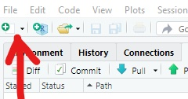
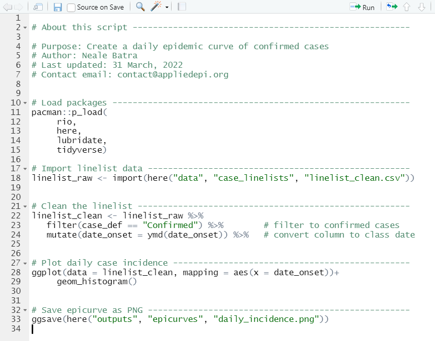
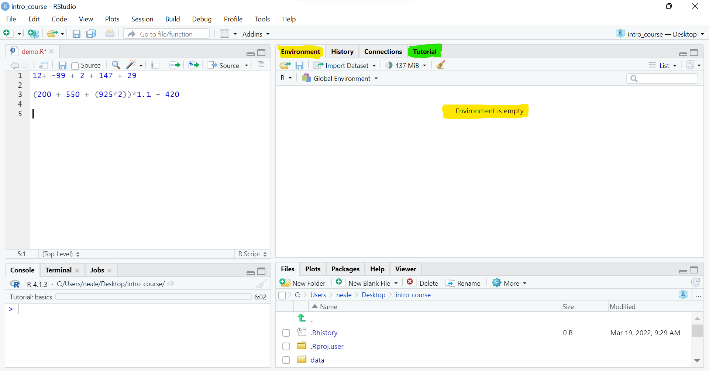
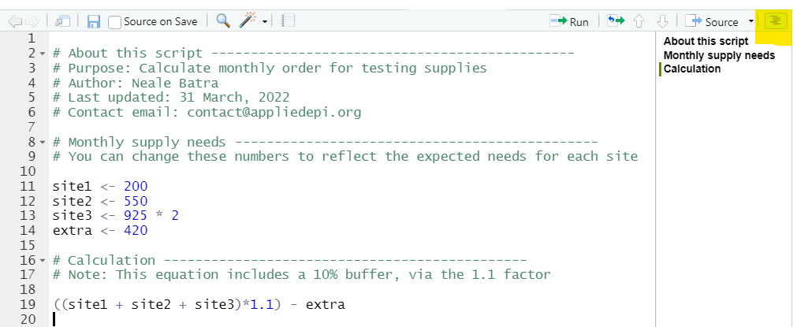
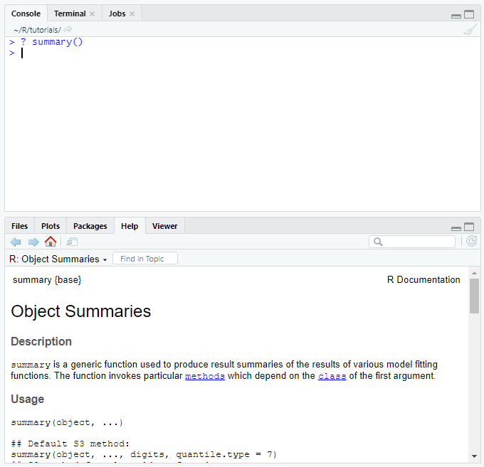

Introduction to R for Applied Epidemiology
Welcome
Welcome to the live course “Introduction to R for applied epidemiology”, offered by Applied Epi - a nonprofit organisation that offers open-source tools, training, and support to frontline public health practitioners.

R setup, basic syntax, and importing data
This exercise focuses on setting up R for the first time and an introduction to basic R coding.
Format
This exercise will guide you through a set of tasks.
You should perform these tasks in RStudio on your local
computer.
Getting Help
There are several ways to get help:
- Look for the “helpers” (see below)
- Ask your live course instructor/facilitator for help
- Ask a colleague or other participant in the course for tips
- Post a question in Applied Epi Community in the category for questions about Applied Epi Training
Here is what those “helpers” will look like:
Click to read a hint
Here you will see a helpful hint!
Click to see a solution (try it yourself first!)
linelist %>%
filter(
age > 25,
district == "Bolo"
)Here is more explanation about why the solution works.
Quiz questions
Please complete the quiz questions that you encounter throughout the tutorial. Answering will help you to comprehend the material, and will also help us to improve the exercises for future students.
To practice, please answer the following questions:
Icons
You will see these icons throughout the exercises:
| Icon | Meaning |
|---|---|
| Observe | |
| Alert! | |
| An informative note | |
| Time for you to code! | |
| Change to another window | |
| Remember this for later |
Learning objectives
In this exercise you will:
- Become familiar with the panels in the RStudio interface
- Practice opening a new R script and running R code “commands” from an R script
- Learn basic syntax, operators, and functions
- Install and load R packages
Initial setup
Prior to beginning this exercise, you completed the initial setup steps to:
- Install R and RStudio
- Download the course files in the “intro_course” folder to your
desktop
- Create a new RStudio project in the “intro_course” folder
- Download the exercises for this course, including this one
Understand R and RStudio
Understand R
R is a language used for statistical computing and graphics, developed in 1991 and based on the language S (read more of the history here).
R is different from other programming languages in that its original purpose is data analysis.
R is distinct from other data analysis languages because:
- It is free (no more license fees!)
- It has advanced graphics capabilities
- It has versatile automated reporting capabilities (very useful in
public health!)
- It is open-source (new capabilities are created by the user
community)
- It has a large, growing, and vibrant user community.
Because R is open-source, its functionalities are expanded by its user community - every day! Users like you can write R code that does a specific task (for example, a template for an outbreak situation report), share it with the world, and others can evaluate and adopt it as needed. Ultimately, this is a robust process with millions of people testing and vetting code. Only the best becomes widely adopted. R is trusted and used by many institutions: for example, the US Food and Drug Administration (FDA).
R is governed by a “core group” and is updated every few months. Pay attention to the R version that you download - each version is assigned a number (like “R version 4.1.2 (2021-11-01)”) and a name to make it easier to remember, like “Bird Hippie”. To update your version of R, re-download it.
R is the vehicle engine
When you install R to your computer, it is an independent software that you can open directly. If you open only R (not RStudio), you will see only one simple panel - the R Console. This is not how must people use R. Using R this way will run all the computations and create all the plots you desire, but it will be difficult to stay organized.
Now, people use Integrated Development Environments (IDEs) such as RStudio to “wrap around” their R software, allowing a more friendly user interface and file organization.
You can think of R as being the engine of a vehicle, doing the crucial work, and RStudio as the body of the vehicle (with seats, accessories, etc.) that helps you actually use the engine to move forward!
RStudio is the vehicle body
“RStudio” is an interface (IDE) for easier use of R. It is offered for free by the RStudio corporation.
Again, you can think of R as the engine of a vehicle, doing the crucial work, and RStudio as the body of the vehicle (with seats, accessories, etc.) that helps you actually use the engine to move forward! Therefore, you should install R and RStudio to proceed.
When you open RStudio, it will automatically find the R installation on your computer, and use it. There is no need to open both programs.
Quiz
Now, please check your understanding of R and RStudio by answering the questions below:
RStudio tour
Look around RStudio. If the size of the text is too small or large, adjust it in the View menu.
- Observe the major RStudio panes. How many panes do you see?
- You should see at least 3 panes:
- The Console, Terminal, Render, and Jobs pane (left
or lower-left)
- The Environment (upper-right, which also holds the
Tutorials that this exercise is in)
- The Files, Plots, Packages, Help, and Viewer panes
(lower-right)
- The Console, Terminal, Render, and Jobs pane (left
or lower-left)
- If you see only these 3 panes, click File -> New file -> R
script to open a new R Script and achieve the classic look pictured
below. Now you will have the 4th pane, which is called the “Source”
pane.
- Take a few minutes to familiarize yourself with the locations of the various panes, using the diagram below.
- You should see at least 3 panes:

The Source Pane This pane, by default in the upper-left, is a space to edit, run, and save your scripts. Scripts contain the commands you want to run. This pane can also display datasets (data frames) for viewing.
For Stata users, this pane is similar to your Do-file and Data Editor windows.
The R Console Pane
In the lower-left, you may need to click from “Jobs” tab to the “Console” tab to see the R Console (because this tutorial is running). This is the home of the R software itself, the “engine” where the commands are actually run and non-graphic outputs and error/warning messages appear. You can directly enter and run commands in the R Console, but realize that these commands are not saved as they are when running commands from a script.
If you are familiar with Stata, the R Console is like the Command Window and also the Results Window.
The Environment Pane This pane, by default in the upper-right, is most often used to see brief summaries of objects in the R Environment in the current session. These objects could include imported, modified, or created datasets, parameters you have defined (e.g. a specific epi week for the analysis), or vectors or lists you have defined during analysis (e.g. names of regions). You can click on the arrow next to a data frame name to see its variables.
In Stata, this is most similar to the Variables Manager window.
This pane also contains History where you can see commands that you can previously. It also has a “Tutorial” tab where you can complete interactive R tutorials if you have the learnr package installed. It also has a “Connections” pane for external connections, and can have a “Git” pane if you choose to interface with Github.
Files, Plots, Packages, Help and Viewer Pane The lower-right pane includes several important tabs. The Files pane is a browser which can be used to open, rename, or delete files. Typical plot graphics including maps will display in the Plot pane. Interactive or HTML outputs will display in the Viewer pane. The Help pane can display documentation and help files. The Packages pane allows you to see, install, update, delete, load/unload R packages, and see which version of the package you have. To learn more about packages see the packages section below.
This pane contains the Stata equivalents of the Plots Manager and Project Manager windows.
For more detail on RStudio capabilities, download this PDF RStudio
IDE cheatsheet.
RStudio projects
What is an RStudio project?
Most of the time when you use R, it will make your life drastically easier to organize your work within an RStudio project.
A self-contained and portable R environment
An RStudio project is a self-contained and portable R working environment - effectively a folder for all the files associated with a distinct project (data files, R scripts, outputs, etc.).
- You can zip an RStudio project and email it to someone else. They
should be able to open it and replicate your work exactly!
- An RStudio project can be linked to a repository on version-control software like Git/Github
If you do not work in an R project, it will be harder to organize files, to share your work with others, and you may encounter lots of frustration struggling to import files with something called the “working directory”. When you use an R project, your scripts become much more easy to share and less likely to “break” when someone else uses them.
Confirm that you are in a project
If you are working in an RStudio project, you will see the name of the project indicated in the upper-right corner of RStudio. If you are not in an RStudio project, it will read “Project: (None)”. What do you see in your RStudio?

Explore your RStudio project
Now we will practice opening your RStudio project.
Navigate to the “intro_course” folder that you saved on your desktop, where you saved the R project.
The contents of the folder should look similar to this:

In the folder, you should see a small file with an icon that looks like an “R box” - this is the RStudio project file (.Rproj).
To directly open the project next time, simply double-click this RStudio project file to open it. RStudio will open, and all your files for this project will be at-the-ready.
Observe in the “Files” RStudio pane (lower-right) that you can also see and access the contents of the “intro_course” project.

You can read more about RStudio projects in this chapter of the Epi R Handbook.
Running R commands
Open an R script
If you have not already done so, open a new R script by clicking File -> New file -> R script.

You should see a new empty space appear in the upper-left of RStudio. This space is the R script.
Currently, the script is not saved. Click the save icon above the script, or click File -> Save As.
Name the script as “demo.R” and ensure it saves in the same folder as your R project.
Note that the file extension for an R script is “.R”. In working with R, you will encounter other extensions, but remember that this one is for R scripts.
Observe that the file now appears in the “Files” RStudio pane in the lower-right. Similarly, it should also appear in your File Explorer.
A script is a list of instructions for R
A script is a place to write instructions for R.
A typical R script for public health analysis/reporting might include sections like:
- Header containing information for the reader such as the script objective, authors, contact info, date last updated, etc.
- Load R packages
- Import the data
- Clean the data
- Perform summary and statistical analyses
- Display results as plots, tables, maps, etc.
In the example below, the green text and hash (#) symbols are “comments” or “notes” for the reader, or used to delineate sections of the script. The black text is R code commands.

Write simple R commands
Let’s do some coding!
Get comfortable writing and running commands
As described in the class demonstration, you can run R commands the following ways:
- Type the command directly into the Console pane (lower-left
of RStudio) and press Enter.
- Type the command into a script, ensure that your cursor on this line
of the script, and press the “Run” button in the upper-right of the
script.
- Type the command into a script, ensure that your cursor is on this
line of the script, and type Ctrl and Enter (or Cmd and Enter on a
Mac).
- Use your mouse to highlight certain part of a command. Press “Run” or Ctrl+Enter to run only the highlighted code.
R as a calculator
Let’s begin with perhaps the most simple use of R, just to get comfortable running commands.
Below are common mathematical operators in R. These are often used to perform addition, division, to create new columns in datasets, etc. Spaces around the operators will not affect the command, but make the code more readable.
| Purpose | Example in R |
|---|---|
| addition | 2 + 3 |
| subtraction | 2 - 3 |
| multiplication | 2 * 3 |
| division | 30 / 5 |
| exponent | 2^3 |
| order of operations | ( ) |
Type simple mathematical commands into the R script. Try to run the commands in ALL of the ways listed above.
Which is your preferred method to run a command?
For these simple commands (that do not involve saving any objects nor graphical outputs), the result will appear in the Console pane.
Now, run commands in your R script to find the solutions to these math problems:
Click to read a hint
Use the addition operator + between the numbers, place
the cursor on that line of the script, and press the “Run” button in the
upper-right of the script. Don’t forget that the second value is
NEGATIVE 99.
Click to see a solution (try it yourself first!)
12 + -99 + 2 + 147 + 29Let’s try a question more relevant to public health:
You are managing a COVID testing campaign across 3 sites, and you need to place a supply purchase order for rapid tests for next month. Based on the following information, how many tests do you need to order?
- Site 1 uses 200 per month
- Site 2 uses 550 per month
- Site 3 has 2 sub-sites that each need 925 tests per month
- You should order 10% extra as a buffer against higher demand
- You have 420 tests extra remaining from last month, which you can use in the coming month
Click to read a hint
Use parentheses ( ), the asterisk multiplication operator, and the addition + and subtraction - operators. First, total the known needs (200, 550, and two times 925). Wrap that all in parentheses, because you need to multiply that sum by the desired buffer (110%, but in decimal form). That total should also be wrapped in parentheses, because you need to then subtract the extra left-over from the previous month (which does not need to be purchased).
Click to see a solution (try it yourself first!)
((200 + 550 + (925 * 2)) * 1.1) - 420Documentation
It is important to write your code so that other people have an easy time reading it! In fact, if you return to this code one or two months later, you may need help remembering why you wrote this command.
Any text written to the right of a “hash” symbol (#) is ignored by R as it runs commands in a script. So, you can use these symbols to write “comments” throughout the script.
Make sure that your solution has the following:
- A header that describes the purpose of the command
- Some detailed instructions about the command
- Spaces around all the mathematical operators as shown below
Future readers of your code will thank you!
# Purpose: Calculate monthly order for testing supplies
# Author: Neale Batra
# Last updated: 31 March, 2022
# Contact email: contact@appliedepi.org
# Site 1 uses 200 per month
# Site 2 uses 550 per month
# Site 3 has 2 sub-sites that each need 925 tests per month
# Order 10% extra as a buffer against higher demand
# At the end, subtract the number of tests remaining from last month
((200 + 550 + (925 * 2)) * 1.1) - 420Creating objects
Types of objects
R is built to allow you to store “objects” for later use. They are stored in your R Environment, which is visible in the Environment pane of RStudio (upper-right).
Everything you store in R - datasets, variables, a list of village names, a total population number, even outputs such as graphs - are objects which are assigned a name and can be referenced in later commands.
In a given script you may create (“define”) and re-define hundreds of objects. Some examples of objects include:
- Single values, of the class:
- Numeric (e.g.
2) - Logical (
TRUEorFALSE)
- Character (e.g.
"Kigali")
- Numeric (e.g.
- A “data frame” (a dataset imported into R from an Excel, CSV, or other file format)
- A “vector” (sequence or list of single values, such as which colors to use in a plot)
We’ll talk more about the various types of objects later, but for now let’s practice defining simple objects.
The assignment operator
Create objects by assigning them a value with the “assignment
operator”, that is: <-
You can think of the assignment operator <- as the words “is defined as”.
This operator looks like an arrow, and it takes the value of the right side, and assigns it to the name on the left. Assignment commands generally follow a standard order:
object_name <- value (or calculation/process that produces a value)
By running the command with the assignment operator, you can create an object, or by re-running the command you can re-define the object with a new value.
The keyboard shortcut to create the <- is Alt and -
(Windows) or Option and - (Mac).
R Environment
Click to look at your “Environment” pane in RStudio. This is a sub-panel in the same pane that the exercise is running in. Right now, there should be no entries in the Environment pane, because we have not defined any objects yet.

Now, write the code below in your R script, and run the command. (yes, please type it, not just copy/paste, to get familiar with typing the R commands!)
confirmed_cases <- 34We have created the object confirmed_cases, and assigned
it the value 34. This means that in our script (or in the R
Console) we can run other commands using the name
confirmed_cases, and R will know that we are refering to
the value 34.
Look in your Environment pane now.
A quick note about naming objects:
- Object names must not contain spaces, but you should use underscore (_) or a period (.) instead of a space.
- Object names are case-sensitive (meaning that Dataset_A is different from dataset_A).
- Object names must begin with a letter (cannot begin
with a number like 1, 2 or 3).
- Typically, coders write object names in all lowercase, but this is a
stylistic choice
- Keep your object names short - it is much easier to code with short names
❌ my object name
❌ Having both dataset and Dataset
❌ 2nd_wave_of_cases_from_Santa_Clara_County
✅ cases_zambia
✅ linelist_raw
✅ lab_20140216
Note: in R literature, you may often see people using df
as an object name. This is a very shorthand way to refer to the fact
that the object they are saving is a “data frame” (dataset with columns
and rows).
Back to your R script… you can now return/print the value
assigned to the name confirmed_cases, by simply running the
name as a command (look at the R console pane for the
output):
confirmed_casesNote that his command is asking R to print the value. It is always useful to ask yourself: “What is my command asking R to do?”. Doing this regularly will ensure that you understand your commands.
Now, using the same approach, define an object named
suspect_cases and assign the value
12.
Click to see a solution (try it yourself first!)
suspect_cases <- 12Now, write and run the following command. See how you can now reference the values by calling only the assigned names.
total_cases <- confirmed_cases + suspect_casesRe-defining objects
What happens if you receive news that there are 10 additional
confirmed cases? If you edit the first command to read
confirmed_cases <- 44, does the value of
confirmed_cases in the RStudio Environment pane immediately
change to 44? (no) Does the value of total_cases
immediately change to 56?
If you change a written value in your script, it does not automatically update the rest of your script, nor does it change any values stored in R!
You must re-run the commands in order for the changes to be registered by R.
In this case, you must re-run two commands to update the value of
total_cases (and they must be run in the correct
order!)
Running your whole script
At this point, you might wonder - “why do I need to run each line of
my script one-by-one?”. Well, you don’t have to! You have two options to
run multiple commands at once:
1) Use your mouse to highlight both commands in the script, and
run
2) If you want to run ALL the commands in your script, from
top-to-bottom, select all the commands by pressing Ctrl + a (Cmd + a for
Mac), and click “Run”
Before you run the entire script, consider whether you have any unfinished code above your current selection that might cause an Error. Remember, you are asking R to run every command in the entire script, and R will stop if it encounters an error.
If there is one command you want to temporarily remove, place a # symbol at the beginning of this line to the left of the code. R will ignore this line.
Exercise: Medical supply chain calculation
Let’s run an exercise that uses that supply chain example from the previous section. As a reminder: you are managing a COVID testing campaign across 3 sites, and you need to place a supply order for rapid tests for next month. You have the following information:
- Site 1 uses 200 per month
- Site 2 uses 550 per month
- Site 3 has 2 sub-sites that each need 925 tests per month
- You should order 10% extra as a buffer against higher demand
- You have 420 tests extra remaining from last month, which you can use in the coming month
You wrote this command to return the need for tests next month:
((200 + 550 + (925 * 2)) * 1.1) - 420Re-write this script so that is easy to re-run every month, and so that it will produce the number of tests you need to order for the next month.
Click to read a hint
Begin by writing 3 commands, which define the needs for each of the 3 sites. Then, write one command that defines excess tests remaining from the previous month. Finally, write a command that prints the total number of tests needed by replacing the numbers with the object names defined in the previous commands.
Click to see a solution (try it yourself first!)
# define values (objects) for use in the calculation
site1 <- 200
site2 <- 550
site3 <- 925 * 2
extra <- 420
# run this command to print the amount needed to order
((site1 + site2 + site3) * 1.1) - extraFor extra credit, answer the following two questions:
- If you wanted to save the final output value to reference later,
what operator would you add, and where?
- How would you need to modify your script if the two sub-sites of site 3 needed different numbers of tests?
Remember to save your R script often! Just click the small “save icon” in the row of icons above the script, or click File -> Save
Commenting
You have now written a useful script! But what if your colleague wants to use it? Will they be able to understand your logic and commands?
Here is an example of a well-documented script. You do not need to write this in your script - simply look at it.
Note how clear it is to read - each section is clearly demarcated with plentiful spaces and newlines.
Together, we will make your R script well-documented.
Using the # (hash) for comments
As demonstrated earlier, any text written to the right of the hash symbol is ignored by R as it runs commands. As a result you can place the hash symbol:
- At the beginning of a line to prevent the entire line from being run. For example, at the top of your script you can write an informative section:
# Purpose: Calculate monthly order for testing supplies
# Author: (your name)
# Last updated: (date)
# Contact email: (your email)
# define values (objects) for use in the calculation
site1 <- 200
site2 <- 550
site3 <- 925 * 2
extra <- 420
# run this command to print the amount needed to order
((site1 + site2 + site3) * 1.1) - extra- You can also place the # to the left of some code, to write comments on the same line as the code:
# Purpose: Calculate monthly order for testing supplies
# Author: (your name)
# Last updated: (date)
# Contact email: (your email)
# define values (objects) for use in the calculation
site1 <- 200 # needs for site 1
site2 <- 550 # needs for site 2
site3 <- 925 * 2 # needs for site 3 subsites
extra <- 420 # number of tests remaining from last month
# run this command to print the amount needed to order
((site1 + site2 + site3) * 1.1) - extraSections headings
Furthermore, you can utilize a keyboard shortcut to insert a section header into your script.
Place your cursor where the new section should start and press Ctrl, Shift, and R at the same time (or Cmd Shift R on a Mac). In the pop-up, name the section, for example “Monthly supply needs”.
The new section header should look something like this:
# Monthly supply needs ----------------------------------------------RStudio will recognize this section, and it will appear in the script “Outline”. This clickable Outline tool can be very useful to navigate scripts with hundreds or even thousands of lines.

Adapt your script to utilize section headings and comments
Click to see a solution (try it yourself first!)
# About this script ----------------------------------------------
# Purpose: Calculate monthly order for testing supplies
# Author: (your name)
# Last updated: (date)
# Contact email: (your email)
# Monthly supply needs ----------------------------------------------
# You can change these numbers to reflect the expected needs for each site
site1 <- 200 # needs for site 1
site2 <- 550 # needs for site 2
site3 <- 925 * 2 # needs for site 3 subsites
extra <- 420 # number of tests remaining from last month
# Calculation ----------------------------------------------
# Note: This equation includes a 10% buffer, via the 1.1 factor
((site1 + site2 + site3) * 1.1) - extraCharacter objects
Defined objects can also be “character”, meaning letters and symbols that are not numbers. Character values are distinguished by being placed within quotation marks, like “New York City” or “dm76wk34” (a randomly-generated case unique identifier).
Note that the character objects can be created with, like “exposed”, or can be created with single quotes like ‘infected’ - these have the same effect (sometimes it is useful to place single quotes within double quotes).
Note that thirty-four could be written in R as:
34(a numeric value, capable of being used in mathematic calculations), or
- “34” (a character value, not capable of calculations)
When your R script recognizes that something you have written is a character value (once the first and last quote marks are written) it will turn a different color. See below.
Try to define some character objects in your script, like the ones
below. Experiment with printing them to the Console, and with changing
their value. What happens if you try to add 30 + “12”?
name <- "Oliver"
district <- "Bolo"
occupation <- "nurse"Functions
The previous exercises have been relatively simple coding. We used mathematical operators to perform calculations. But this is not really showcasing R’s abilities! Those exercises were simply to have you practice running commands and creating simple objects.
The real power of R comes from functions. Functions are at the core of using R. Functions are how you perform tasks and operations.
A function is like a machine
A function receives inputs, does some action with those inputs, and produces an output. What the output is depends on the function.
Simple functions
Functions typically operate upon an object placed within the
function’s parentheses. For example, the function sqrt()
returns the square root of a number:
sqrt(64)## [1] 8Likewise, the function sum() accepts an unlimited number
of numeric values and returns the sum.
sum(2, 5, 10, -8, 100)## [1] 109
Time for you to practice this coding in RStudio! In your R script (named
“demo.R”), use the function min() and max() to
find the minimum and maximum of the numbers 3, 55, 9, -4, and 33.
We won’t do a quiz, because the answers should be quite easy… but did your code work?
# calculate the minimum value
min(3, 55, 9, -4, 33)## [1] -4# calculate the maximum value
max(3, 55, 9, -4, 33)## [1] 55Vectors
Try the function c(). What does that function do? The
“c” represents the term “concatenate”, because this function combines
the values within its parentheses into one unit.
We call this unit a vector. A vector is a unit of several values, which must be of the same class (either all numeric, all character, all logical, etc.) and must be separated by commas.
Vectors may seem abstract right now, but will be useful in later modules of this course. For example, you may need to create a vector of column names that will be printed in a table, or a vector of colors to use in a plot.
See this example, where we create a named vector of numeric values (the ages of 5 patients).
# create a vector of patient ages
patient_ages <- c(5, 10, 60, 25, 12)Try the above command in your R script. Now, what happens when you
run the command patient_ages? All the numbers appear in the
R Console.
It is useful that these numbers can be referenced by one name, because now we can apply changes to all of them with just one step:
patient_ages * 2## [1] 10 20 120 50 24Now, I’m not sure why we would need to multiply all the patient ages by 2, but it sure was easy, wasn’t it?!
Try creating your own vector - make a vector of some names of
districts/cities/counties in your home region. Name it
jurisdictions. Does your command look similar to this?
# A character vector of jurisdiction names in Mozambique
jurisdictions <- c("Maputo", "Inhambane", "Gaza", "Zambezia", "Manica", "Sofala")What can we do with a character vector? We cannot multiply it by 2…
for fun, let us put this vector in another function:
toupper(), which changes all of the characters to upper
case:
toupper(jurisdictions)Note: Even though the vector contains character values, when typing
the name of the vector, you do not use quotes. It is an R
object just like confirmed_cases, and so should be written
plainly in code.
What does the output look like? What if you try the
function tolower()? This could be useful to standardize
names or other character words when joining two datasets!
Functions with named arguments
Most functions you will encounter in R have named arguments, which means you need to specify the settings under which the function will operate.
Let’s return to the character vector jurisdictions that
you defined earlier. We will use the names from the example, but your
vector may include other jurisdictions local to your home region.
Imagine you have this vector of jurisdiction names, but when you run
jurisdictions in R to print the list of jurisdictions, it
looks ugly and is not very readable.
jurisdictions## [1] "Maputo" "Inhambane" "Gaza" "Zambezia" "Manica" "Sofala"You know that R has the ability to make automated reports (which you will learn later in this course). It is very possible that you will want to combine these jurisdiction names in a way that they can be printed in a report - with commas between them for proper punctuation.
The function paste() will accept a vector of multiple
character values, and combine them into one character
value. Even better, with your help it will insert some characters in
between each of the old values (e.g. a space, or a comma, or
both!).
The function paste() has an argument
that is named collapse.
Arguments are written within the parentheses with a single equals
sign, so we will refer to this argument as collapse =.
If there are multiple arguments for one function, they are written with
commas between them.
See the result:
paste(jurisdictions, collapse = ",")## [1] "Maputo,Inhambane,Gaza,Zambezia,Manica,Sofala"Let’s understand what is going on:
The first argument expects the name of a vector, in this case: jurisdictions
Often, the first argument of a function is data to be operated upon, and does not require a name nor an equals sign.
The second argument is collapse =, to which we provide a character value to appear between each of the words.
In the example above, we have chosen “,” which is a comma. The quotation marks ensure that R understands that this is a character value.
paste(jurisdictions, collapse = ",")
## [1] "Maputo,Inhambane,Gaza,Zambezia,Manica,Sofala"
Replicate the code above with your jurisdictions vector in
RStudio.
How would you adjust the code to add a space after each comma?
Click to see a solution (try it yourself first!)
# Note the space after the comma, within the quotation marks
paste(jurisdictions, collapse = ", ")Note how this function knows to not place a comma after the last
value in jurisdictions.
Optional arguments
Often, functions have many arguments… you must become familiar with each function in order to know what it expects. Don’t worry! R coders do not have encyclopedic brains - we look up this information all the time while coding.
Thankfully, most arguments in a function have default values.
For example, functions that make plots may be able to be adjusted in
dozens of ways (title =, subtitle =,
color =, etc.). But most of these arguments have
default values, meaning that you do not need to
supply a value to that argument for the function to successfully
run. Instead, you can write the argument and its assigned value if
you wish.
In the paste() exercise above, collapse =
is an optional argument. You can use the function paste()
without specifying a value to collapse =.
Getting help
A function’s arguments and any default values can be read in the
function’s documentation. To read the documentation, search the
name of the function in the Help pane in the
lower-right of RStudio. Alternatively, type ? before the
function name in the RStudio Console pane (for example,
?paste).
The documentation details will look something like this (we can help you interpret, as they can be difficult to understand at first):

Creating functions
The magic of R really happens when you create your own functions. This is an advanced skill that we do not cover in this course, and you do not typically need to create functions until you are a more experienced R user. You do not need to try this code, unless you want to. This is purely background information.
However, this aspect of R is where its versatility really begins to shine. Imagine if you could convert your entire workflow into one command?
For demonstration purposes, below, the testing supply chain script from the previous section is converted into a function:
# create a function that accepts 4 inputs (1 is optional) and returns the
# needs, based on the equation
# create the function calc_test()
calc_tests <- function(site1, site2, site3, extra){ # list the arguments, and open the function
needs <- ((site1 + site2 + site3)*1.1) - extra # We embed the equation inside the function
return(needs) # the function returns the result
} # close the functionOnce the above code is run, the function is defined (it will appear in the R environment pane just like the other objects).
Now that the function has been defined, we can use it to run the equation given values for the arguments, like this:
calc_tests(site1 = 200, site2 = 550, site3 = (925*2), extra = 420)## [1] 2440See how we’ve wrapped up all the code into a function! Very cool. Think of the possibilities…
If you write a function that is useful to others, you can publish it in an R package - a unit of multiple related functions. Everyone else can test and try your functions, and your work can help people around the world! This is the beauty of open-source software.
Packages
Until now, you have used R functions that come installed with R. For
example, sum(), c(), and
min().
These are called {base} R functions, and they represent a very small portion of all R functions available to you.
An R package is a shareable bundle of related functions that you can download and use. Packages typically have a theme, for example:
- The {stringr} package provides functions for working with “strings”
(character values)
- The {lubridate} package provides functions that make it easier to
work with dates
- The {epikit} package provides functions useful in epidemiological analysis
You can see that the names of packages are often clever puns - the fun spirit of the R community is evident.
CRAN
To install most R packages, use R commands to download the package from “CRAN” to your computer’s “R library”.
Many R users create specialized functions, which they share in packages with the R community to verify.
For packages to be widely distributed, they must be shared on the Comprehensive R Archive Network (CRAN), which is R’s central software repository - an archive of R packages that have passed basic scrutiny.
As of March 2022, there are 19,020 packages available on CRAN. Some of these are immensely popular, with hundreds of thousands of downloads each month.
Security
Are you worried about viruses and security when downloading a package from CRAN? Read this article on the topic.
Install and load packages
Once a package is installed, it is stored in your R “library”. You can then access the functions it contains by “loading” the package for use during your current R session .
Think of R as your personal library: when you install a package, your library gains a new “book” of functions. But each time you want to use a function from that book, you must borrow (“load”) it from your library.
In summary: to use the functions available in an R package, 2 steps must be implemented:
- The package must be installed (once), and
- The package must be loaded (each R session)
Code for installing packages
Remember how we said there are {base} R** functions? There is a
{base} R function to install packages, and it is
install.packages() (note that “packages” is written in
plural).
The name of the package to install must be provided in the
parentheses and in quotes. If you want to install multiple packages in
one command, they must be listed within a character vector
c(). Note that package names are case sensitive.
# install a single package with base R
install.packages("tidyverse")
# install multiple packages with base R
install.packages(c("tidyverse", "rio", "here"))Note: this command installs a package, but does not load it for use in the current session.
Now you try it: install the package “pacman”. If a pop-up window asks if you want to re-start R, say “No”.
Click to see a solution (try it yourself first!)
install.packages("pacman")Code for loading packages
Do you remember how often you need load a package? Every time you start R.
You can do this using the {base} R function
library().
Try this command in RStudio.
# Loads the package pacman for use in the current R session
library(pacman)pacman
We had you install the package “pacman” because it contains functions to make it easier to quickly install and load other functions.
Its name refers to “package manager”, not the video game character.
Can you imagine the potential complications caused when sharing R scripts with someone else? Do they have the same R packages that you have?
You don’t want them to have to search through the script to find
which packages you used in the script… so should you write
install.packages() commands at the top of the script? And
then all of the library() commands as well? If you use 15
packages, that is a lot of lines… and potentially a lot of unnecessary
installations…
One solution is {pacman}’s function p_load(). You can
list the names of packages inside, and it will install each package
only if it is not already installed. Additionally, it will load
each package for use in the R session. It is a very efficient option -
you can include it at the top of your script. If your colleague receives
the script, as long as they have {pacman} already, the script will only
install the packages they do not already have, and will load all of them
for use.
Here is what a {pacman} command can look like. The syntax is quite
simple. Just list the names of the packages within the
p_load() parentheses, separated by commas. Note that
package names are case-sensitive.
Write this command at the top, as the first command in your R script.
pacman::p_load(rio, here, janitor, lubridate, tidyverse)The syntax pacman::p_load() explicitly writes the
package name (pacman) prior to the function name
(p_load()), connected by two colons ::. This
syntax is useful because it also loads the {pacman} package (assuming it
is already installed).
This command can also be written vertically. In any R command, the newlines and indenting will not impact the execution of the code. But it can dramatically improve readability!
Edit your command so that it looks like this.
# Load all the packages needed, installing if necessary
pacman::p_load(
rio, # for importing data
here, # for file paths
janitor, # for data cleaning
lubridate, # for working with dates
tidyverse # for data management
)Other operators
Now that you know more about functions and syntax, take a look through these other common operators and base R functions.
Do not spend a lot of time reviewing these in this exercise, but skim them quickly. If you forget them, these can always be found in the Epi R Handbook R Basics page.
Relational operators
Relational operators compare values and are often used when defining new variables and subsets of datasets. Here are the common relational operators in R:
| Meaning | Operator | Example | Example Result |
|---|---|---|---|
| Equal to | == |
"A" == "a" |
FALSE (because R is case sensitive) Note that ==
(double equals) is different from = (single equals), which acts like the
assignment operator <- |
| Not equal to | != |
2 != 0 |
TRUE |
| Greater than | > |
4 > 2 |
TRUE |
| Less than | < |
4 < 2 |
FALSE |
| Greater than or equal to | >= |
6 >= 4 |
TRUE |
| Less than or equal to | <= |
6 <= 4 |
FALSE |
| Value is missing | is.na() |
is.na(7) |
FALSE (we will discuss missing data in R, later) |
| Value is not missing | !is.na() |
!is.na(7) |
TRUE |
Logical operators
Logical operators, such as AND and OR, are often used to connect relational operators and create more complicated criteria. Complex statements might require parentheses ( ) for grouping and order of application.
| Meaning | Operator |
|---|---|
| AND | & |
| OR | | (vertical bar) |
| Parentheses | ( ) Used to group criteria together and clarify order
of operations |
Note that the == (double equals) asks the
question to R: “IS the value on the right equal to the value on
the left?. The result is either TRUE or
FALSE.
age == 12Asks is the value in columnagefor a given row equal to 12?
In contrast, the = (single equals) is used to assign
values, such as for an argument within a function:
max(age, na.rm = TRUE)This sets thena.rm=argument toTRUE
paste(jurisdictions, collapse = ",")This sets the collapse argument to a comma
%in%
A very useful operator for matching values, and for quickly assessing if a value is within a vector or dataframe.
my_vector <- c("a", "b", "c", "d")"a" %in% my_vector## [1] TRUE"h" %in% my_vector## [1] FALSETo ask if a value is not %in% a vector,
put an exclamation mark (!) in front of the logic
statement:
# to negate, put an exclamation in front
!"a" %in% my_vector## [1] FALSE!"h" %in% my_vector## [1] TRUEBase R math functions
| Purpose | Function |
|---|---|
| rounding | round(x, digits = n) |
| rounding | janitor::round_half_up(x, digits = n) |
| ceiling (round up) | ceiling(x) |
| floor (round down) | floor(x) |
| absolute value | abs(x) |
| square root | sqrt(x) |
| exponent | exponent(x) |
| natural logarithm | log(x) |
| log base 10 | log10(x) |
| log base 2 | log2(x) |
Note: See this page in the Epi R Handbook before using rounding functions. There is some mathematical nuance that is important in some circumstances.
Statistical functions
[CAUTION: The functions below will, by
default, include missing values in calculations. Missing values in the
vector (which in R are written as NA) will result in an
output of NA, unless the argument na.rm = TRUE
is specified. Setting this argument to TRUE is specifying
that NAs be removed (rm) from the
calculation. This can be written shorthand as
na.rm = T.
| Objective | Function |
|---|---|
| mean (average) | mean(x, na.rm=T) |
| median | median(x, na.rm=T) |
| standard deviation | sd(x, na.rm=T) |
| quantiles* | quantile(x, probs) |
| sum | sum(x, na.rm=T) |
| minimum value | min(x, na.rm=T) |
| maximum value | max(x, na.rm=T) |
| range of numeric values | range(x, na.rm=T) |
| summary** | summary(x) |
Notes:
- *
quantile():xis the vector of numbers to consider, andprobs =is a numeric vector with probabilities within 0 and 1.0, e.gc(0.5, 0.8, 0.85) - **
summary(): gives a summary on a numeric vector including mean, median, and common percentiles
DANGER: If
providing a vector of numbers to one of the above statistical functions,
be sure to wrap the numbers within c() .
# If supplying raw numbers to a statistical function, wrap them in c()
mean(1, 6, 12, 10, 5, 0) # !!! INCORRECT !!! ## [1] 1mean(c(1, 6, 12, 10, 5, 0)) # CORRECT## [1] 5.666667